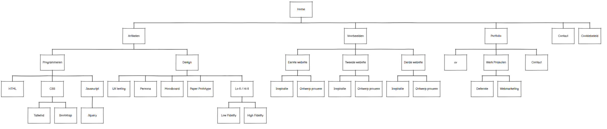

Een sitemap is een gestructureerd overzicht, vaak in XML-formaat, van alle pagina's, video's en bestanden op een website. Het fungeert als een inhoudsopgave of 'blauwdruk' die zoekmachines zoals Google helpt de site sneller en efficiënter te indexeren en te crawlen. Het is cruciaal voor SEO, vooral bij grote of nieuwe websites
Een sitemap is dus een bestand, of afbeelding dat gebruikers OF google crawl bots helpt je website te ontdekken. Voor de gebruiker kan dit handig zijn om snel zijn of haar gewenste informatie te kunnen vinden en een betere UX/UI ervaring te hebben, terwijl een crawl bot hiermee je website kan indexeren voor het Google Algoritme, wat weer beter is voor je over alle SEO scoren.
Sitemap voor crawlers
Een XML-sitemap is
een bestand (sitemap.xml) dat fungeert als een gestructureerde inhoudsopgave van een website, specifiek bedoeld voor zoekmachines zoals Google. Het bevat een lijst met alle belangrijke URL's, vaak aangevuld met metadata zoals de laatste wijzigingsdatum, waardoor zoekmachines de website sneller en efficiënter kunnen crawlen en indexeren.

Sitemap voor gebruikers
Een HTML-sitemap voor gebruikers is
een overzichtelijke, aanklikbare pagina die de structuur en belangrijkste pagina's van een website toont. Het verbetert de gebruikerservaring (UX) door bezoekers te helpen navigeren en snel informatie te vinden.